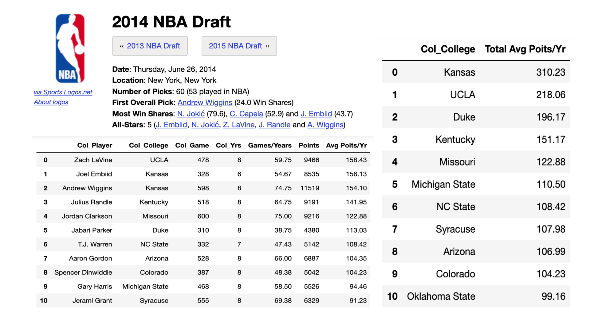

Assignment 2

There are many NBA fans out there who like to track how well their favourite college players and affiliated college teams are doing before being drafted. The above charts summarize the top 10 players and top 10 colleges with the highest average scores per year. Although this may not represent the best picks based on win shares formula, the goal here is to demonstrate the use of SQL commands to produce aggregated outcome based on computed results. To find out how this is done, please click here.